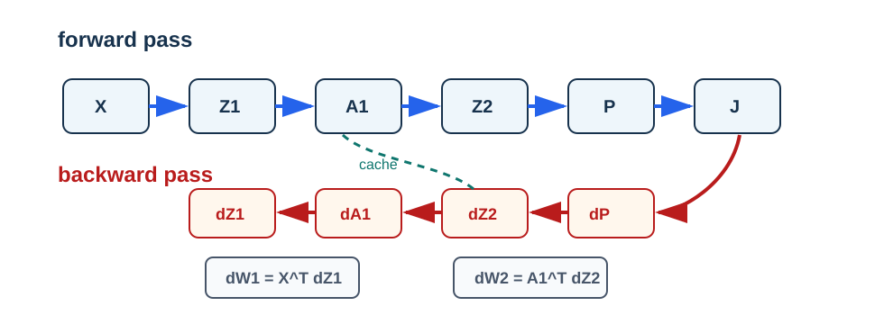

Backpropagation
Pregunta aplicada
Forward propagation nos dice cómo una red produce predicciones. Pero entrenar exige responder:
¿Cómo cambia la pérdida si modificamos cada peso de la red?
Backpropagation es una forma eficiente de aplicar la regla de la cadena a una composición de funciones.
Objetivos del capítulo
Al terminar este capítulo deberías poder:
- leer una red como grafo de cómputo;
- derivar las formas de \(dW^{[2]}\), \(db^{[2]}\), \(dW^{[1]}\) y \(db^{[1]}\);
- explicar por qué softmax con entropía cruzada produce \(dZ^{[2]}=(\hat P-Y)/m\);
- usar una cache de forward para calcular backward;
- diseñar una prueba básica de gradientes.
- derivar el Jacobiano de softmax y la regla de una capa afín;
- explicar por qué backward tiene costo comparable con forward y por qué necesita una cache.
Del riesgo esperado al gradiente calculable
El objetivo poblacional de una red es
\[ R_P(\theta)=\mathbb E_{Z\sim P}[\ell(\theta;Z)], \]
pero backpropagation se aplica a la pérdida empírica
\[ \widehat R_m(\theta)=\frac1m\sum_{i=1}^m\ell(\theta;Z_i). \]
Bajo condiciones que permiten intercambiar derivada y esperanza,
\[ \nabla R_P(\theta)=\mathbb E[\nabla_\theta\ell(\theta;Z)]. \]
Esta identidad explica por qué gradientes de observaciones o mini-batches pueden usarse como estimadores del gradiente poblacional. En el curso, la igualdad que podemos verificar exactamente es la correspondiente al riesgo empírico.
Una prueba de gradientes comprueba derivadas para una muestra y parámetros fijos. No comprueba representatividad de los datos, calibración ni bajo riesgo de uso.
El grafo de cómputo
Para una red de una capa oculta:
- entrada \(X\);
- preactivación \(Z_1\);
- activación \(A_1\);
- logits \(Z_2\);
- probabilidades \(P\);
- pérdida \(J\).
Cada flecha representa una operación diferenciable o casi diferenciable. Backpropagation recorre el grafo en sentido inverso:
- primero \(J\);
- luego \(P\), \(Z_2\), \(A_1\) y \(Z_1\);
- finalmente los parámetros.

Lectura de la figura. Forward produce valores intermedios; backward reutiliza esa cache para construir gradientes. Si una forma no coincide con el parámetro correspondiente, el error está en el recorrido del grafo o en una transposición.
Gradiente de softmax con entropía cruzada
La simplificación no se toma como una regla memorizada. Para una observación, escribamos
\[ p_a=\frac{e^{z_a}}{\sum_{r=1}^k e^{z_r}}. \]
Al derivar \(p_a\) respecto a \(z_b\) aparecen dos casos, que se reúnen con la delta de Kronecker \(\delta_{ab}\):
\[ \frac{\partial p_a}{\partial z_b} =p_a(\delta_{ab}-p_b). \]
Si \(L=-\sum_{a=1}^k y_a\log p_a\), la regla de la cadena da
\[ \begin{aligned} \frac{\partial L}{\partial z_b} &=-\sum_{a=1}^k\frac{y_a}{p_a} \frac{\partial p_a}{\partial z_b}\\ &=-\sum_{a=1}^k y_a(\delta_{ab}-p_b)\\ &=-y_b+p_b\sum_{a=1}^k y_a\\ &=p_b-y_b, \end{aligned} \]
porque una etiqueta one-hot satisface \(\sum_a y_a=1\). Al promediar \(m\) observaciones:
\[ \frac{\partial J}{\partial Z^{[2]}} = \frac{1}{m}(\hat P - Y). \]
La cancelación entre el Jacobiano de softmax y la derivada del logaritmo es una de las razones por las que esta combinación es estándar. Si se cambia la pérdida o la transformación de salida, esta identidad debe derivarse de nuevo.
Gradientes de la segunda capa
Con:
\[ Z^{[2]} = A^{[1]}W^{[2]} + b^{[2]}, \]
definimos:
\[ dZ^{[2]} = \frac{1}{m}(\hat P - Y). \]
Entonces:
\[ dW^{[2]} = (A^{[1]})^\top dZ^{[2]}, \]
\[ db^{[2]} = \sum_i dZ^{[2]}_i. \]
Estas tres fórmulas provienen de una sola regla de capa. Para \(Z=AW+\mathbf 1_m b^\top\) y una perturbación diferencial,
\[ dZ=dA\,W+A\,dW+\mathbf 1_m\,(db)^\top. \]
Al emparejar cada término con el gradiente que llega desde la pérdida se obtiene
\[ \nabla_W J=A^\top\nabla_ZJ, \qquad \nabla_b J=\mathbf 1^\top\nabla_ZJ, \qquad \nabla_A J=\nabla_ZJ\,W^\top. \]
La regla no depende de que la capa sea la primera o la última. Lo que cambia entre capas es la derivada de la activación y el gradiente que llega desde arriba.
Propagar hacia la capa oculta
Primero pasamos el gradiente hacia las activaciones:
\[ dA^{[1]} = dZ^{[2]}(W^{[2]})^\top. \]
Luego atravesamos ReLU:
\[ dZ^{[1]} = dA^{[1]} \odot \mathbf{1}\{Z^{[1]} > 0\}. \]
Finalmente:
\[ dW^{[1]} = X^\top dZ^{[1]}, \]
\[ db^{[1]} = \sum_i dZ^{[1]}_i. \]
Backpropagation como algoritmo
Las identidades anteriores ya contienen la deducción. El algoritmo debe conservar los valores del forward correspondiente, iniciar con \(dZ^{[2]}=(\widehat P-Y)/m\) y aplicar la regla de capa en orden inverso. El código para dos capas es:
def backward_pass(X, Y, cache, params):
P = cache["P"]
A1 = cache["A1"]
Z1 = cache["Z1"]
W2 = params["W2"]
dZ2 = (P - Y) / len(X)
dW2 = A1.T @ dZ2
db2 = np.sum(dZ2, axis=0)
dA1 = dZ2 @ W2.T
dZ1 = dA1 * (Z1 > 0)
dW1 = X.T @ dZ1
db1 = np.sum(dZ1, axis=0)
return {"W1": dW1, "b1": db1, "W2": dW2, "b2": db2}Para una red con \(L\) capas, el mismo argumento se recorre desde \(\ell=L\) hasta \(1\):
calcular el gradiente de la pérdida respecto a la salida
para ell = L, ..., 1:
atravesar la activación de la capa ell
calcular dW[ell] y db[ell]
propagar el gradiente hacia A[ell-1]Backpropagation no es una fórmula particular de dos capas. Es evaluación en modo reverso de la regla de la cadena sobre un grafo acíclico de operaciones.
Costo, memoria y alcance de la garantía
Cada producto matricial del forward reaparece con dimensiones transpuestas en el backward. Por ello, el costo de backpropagation es del mismo orden que el forward: para la red de una capa oculta,
\[ O\big(mh(d+k)\big). \]
El ahorro frente a diferencias finitas es decisivo. Si hay \(P\) parámetros, verificar todas las coordenadas por diferencias centrales requiere aproximadamente \(2P\) evaluaciones forward; backpropagation obtiene los \(P\) gradientes en un solo recorrido inverso de costo comparable a unas pocas pasadas.
El precio es memoria. El backward necesita los valores de \(X\), \(Z^{[1]}\), \(A^{[1]}\) y las probabilidades producidas por el mismo forward. Recalcularlos puede ahorrar memoria a cambio de más cómputo, estrategia conocida como checkpointing.
La eficiencia no es una garantía de encontrar el mínimo global. Backpropagation calcula, salvo errores numéricos y puntos no diferenciables elegidos por convención, el gradiente de la pérdida empírica para los parámetros actuales. El optimizador decide cómo usarlo; la no convexidad de una red permanece.
Verificación por diferencias finitas
Una forma de detectar errores en backpropagation es comparar contra una aproximación numérica:
\[ \frac{\partial J}{\partial \theta_j} \approx \frac{J(\theta_j+\varepsilon)-J(\theta_j-\varepsilon)}{2\varepsilon}. \]
Esta técnica no se usa para entrenar porque es costosa, pero es excelente para depurar.
Ejemplo resuelto: diferencia finita escalar
Considera la función simple:
\[ J(w)=(w-3)^2. \]
Su derivada exacta es:
\[ J'(w)=2(w-3). \]
En \(w=2\), la derivada exacta es:
\[ J'(2)=2(2-3)=-2. \]
Ahora usa diferencia finita central con \(\varepsilon=0.01\):
\[ \frac{J(2+\varepsilon)-J(2-\varepsilon)}{2\varepsilon} = \frac{J(2.01)-J(1.99)}{0.02}. \]
Calculamos:
\[ J(2.01)=(-0.99)^2=0.9801, \qquad J(1.99)=(-1.01)^2=1.0201. \]
Por tanto:
\[ \frac{0.9801-1.0201}{0.02}=-2. \]
La aproximación coincide con la derivada exacta. En una red real comparamos el error relativo, no una igualdad exacta. Un \(\varepsilon\) demasiado grande introduce error de aproximación y uno demasiado pequeño puede sufrir cancelación numérica. Si la diferencia sigue siendo grande, revisamos signos, escalas, transpuestas y la división por \(m\).
Ejemplo resuelto: formas de los gradientes
Supón que:
- \(X\in\mathbb{R}^{100\times 64}\);
- \(W^{[1]}\in\mathbb{R}^{64\times 32}\);
- \(A^{[1]}\in\mathbb{R}^{100\times 32}\);
- \(W^{[2]}\in\mathbb{R}^{32\times 10}\);
- \(\hat P,Y\in\mathbb{R}^{100\times 10}\).
Entonces:
| Gradiente | Cálculo | Forma |
|---|---|---|
| \(dZ^{[2]}\) | \((\hat P-Y)/100\) | \(100\times 10\) |
| \(dW^{[2]}\) | \((A^{[1]})^\top dZ^{[2]}\) | \(32\times 10\) |
| \(db^{[2]}\) | suma por filas de \(dZ^{[2]}\) | \(10\) |
| \(dA^{[1]}\) | \(dZ^{[2]}(W^{[2]})^\top\) | \(100\times 32\) |
| \(dW^{[1]}\) | \(X^\top dZ^{[1]}\) | \(64\times 32\) |
El primer chequeo es simple: cada gradiente debe tener la misma forma que el parámetro que actualiza. Pasar este chequeo no demuestra que sus valores sean correctos.
Errores frecuentes
- Olvidar dividir por \(m\).
- Confundir
Y - PconP - Y. - Sumar
dbsinaxis=0. - Usar las formas transpuestas incorrectas.
- Usar valores de un forward distinto al que produjo la pérdida.
- No estabilizar softmax.
Punto de control
Si el autograder dice que dW2 tiene forma incorrecta, no empieces cambiando signos. Primero revisa:
- ¿
A1.T @ dZ2produce la misma forma queW2? - ¿
db2suma sobre observaciones y no sobre clases? - ¿dividiste por \(m\) exactamente una vez?
Caso longitudinal: backpropagation en dígitos
En el caso load_digits, el forward produce probabilidades para diez clases. El backward debe producir gradientes con las mismas formas que los parámetros:
| Parámetro | Forma si \(h=32\) | Gradiente esperado |
|---|---|---|
| \(W^{[1]}\) | \(64\times 32\) | \(dW^{[1]}\), misma forma |
| \(b^{[1]}\) | \(32\) | \(db^{[1]}\), una entrada por neurona |
| \(W^{[2]}\) | \(32\times 10\) | \(dW^{[2]}\), misma forma |
| \(b^{[2]}\) | \(10\) | \(db^{[2]}\), una entrada por clase |
La prueba de gradiente no se hace sobre todo el dataset. Se hace sobre un caso pequeño, con pocas observaciones y parámetros controlados, porque ahí se puede comparar contra diferencias finitas. Una red que “entrena” sin pasar una prueba de gradiente puede estar reduciendo la pérdida por accidente o por un error de implementación no detectado.
Verificaciones seleccionadas
- Si \(A^{[1]}\) tiene forma \(m\times h\) y \(dZ^{[2]}\) tiene forma \(m\times k\), entonces \(dW^{[2]}=(A^{[1]})^\top dZ^{[2]}\) tiene forma \(h\times k\).
- Una diferencia finita central usa \((J(\theta+\epsilon)-J(\theta-\epsilon))/(2\epsilon)\); suele ser más estable que usar solo \(J(\theta+\epsilon)-J(\theta)\).
- Un error de forma que NumPy resuelve con broadcasting puede producir un valor numérico sin representar el gradiente correcto.
Para explorar más
- Extensión matemática: verifica por diferencias finitas un solo peso de la primera capa y un solo peso de la segunda capa.
- Extensión computacional: agrega chequeos automáticos de forma para cada gradiente antes de actualizar parámetros.
- Conexión con proyecto: decide qué prueba mínima de gradientes o sanity check usarías antes de confiar en un entrenamiento propio.
Revisión del capítulo
Backpropagation aplica la regla de la cadena de forma organizada sobre un grafo de cómputo. El forward produce activaciones, logits, probabilidades y pérdida; el backward usa esos valores guardados para calcular gradientes.
La simplificación \(dZ^{[2]}=(\hat P-Y)/m\) para softmax con entropía cruzada permite propagar gradientes hacia la segunda capa y luego hacia la capa oculta. Cada gradiente debe tener exactamente la misma forma que el parámetro que actualiza.
La verificación por diferencias finitas no reemplaza la derivación, pero sí detecta errores de signo, escala o forma. Una red que no mejora aunque sus formas sean correctas exige revisar inicialización, activaciones, tasa de aprendizaje y datos.
Términos clave
- Grafo de cómputo: representación de operaciones intermedias usadas para calcular una salida.
- Cache: valores guardados durante forward propagation para reutilizarlos en backward propagation.
- Backpropagation: aplicación eficiente de la regla de la cadena desde la pérdida hacia los parámetros.
- Gradiente: derivada de la pérdida respecto a un parámetro o activación.
- Diferencias finitas: aproximación numérica de derivadas para verificar gradientes.
- Forma del gradiente: dimensión que debe coincidir con el parámetro correspondiente.
Ejercicios
Preguntas conceptuales
- Explique por qué backpropagation necesita valores guardados del forward pass.
- Explique por qué
dZ1 = dA1 * (Z1 > 0)para ReLU.
Problemas cuantitativos
- Derive la forma de
dW2a partir deZ2 = A1 @ W2 + b2. - Si \(A^{[1]}\in\mathbb{R}^{80\times 16}\) y \(dZ^{[2]}\in\mathbb{R}^{80\times 4}\), calcule la forma de \(dW^{[2]}\) y \(db^{[2]}\).
Práctica computacional
- Diseñe una prueba pequeña para verificar que
backward_passdevuelve gradientes con la misma forma que los parámetros. - Implemente una verificación por diferencias finitas para un parámetro escalar.
Durante esta verificación desactive dropout y cualquier otra operación aleatoria; la pérdida evaluada en \(\theta+\varepsilon\) y \(\theta-\varepsilon\) debe usar exactamente los mismos datos y el mismo grafo.
Interpretación y pensamiento crítico
- Un gradiente tiene la forma correcta pero el entrenamiento no mejora. Proponga tres causas posibles.
Profundización matemática y algorítmica
- Derive \(\partial p_a/\partial z_b=p_a(\delta_{ab}-p_b)\) y úsela para obtener \(\nabla_zL=p-y\).
- A partir del diferencial de \(Z=AW+\mathbf 1b^\top\), obtenga los gradientes respecto a \(A\), \(W\) y \(b\).
- Compare el costo de verificar \(P\) parámetros por diferencias centrales con el costo de una pasada backward.
- Explique el intercambio memoria-cómputo de guardar activaciones frente a recalcularlas durante backward.
Proyecto de cierre
- Tome una red pequeña de dos capas y documente una auditoría de gradientes: formas esperadas, formas obtenidas, norma de cada gradiente y resultado de una prueba numérica para un parámetro.